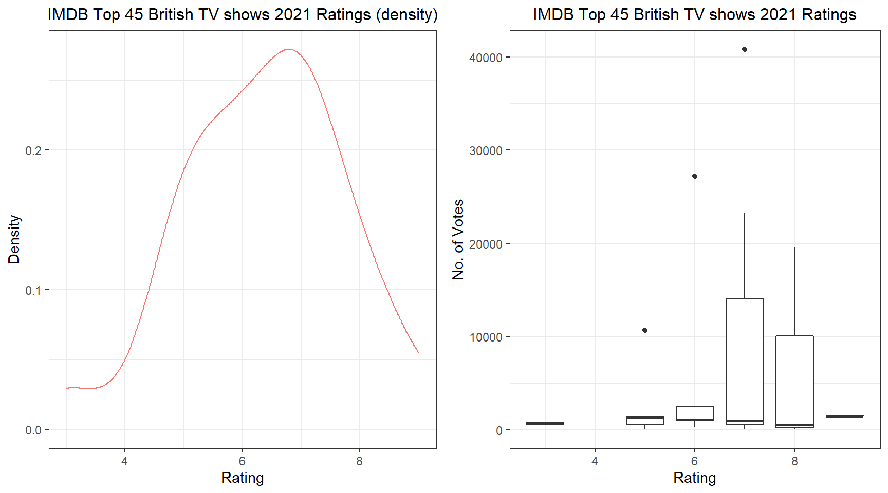
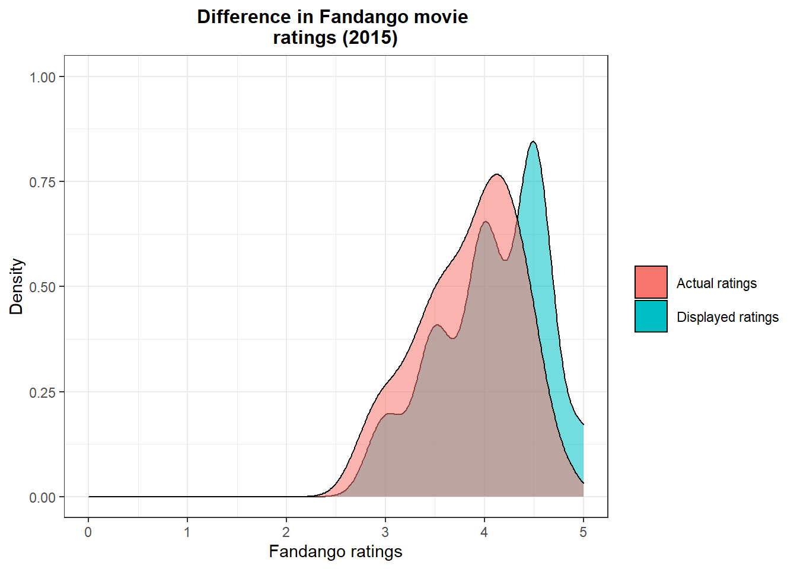
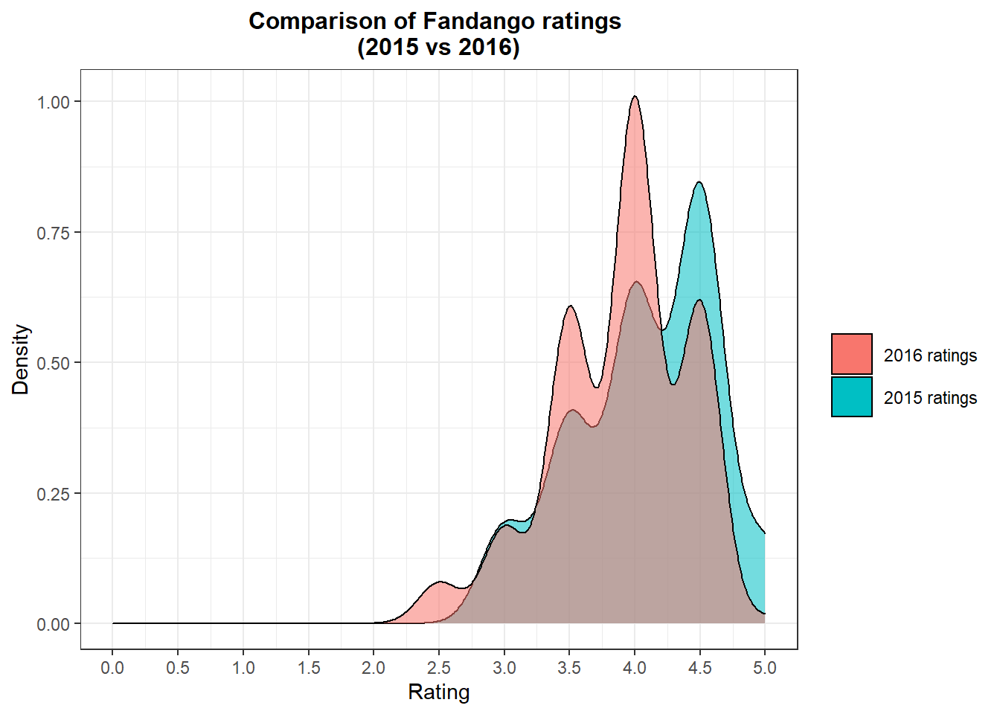
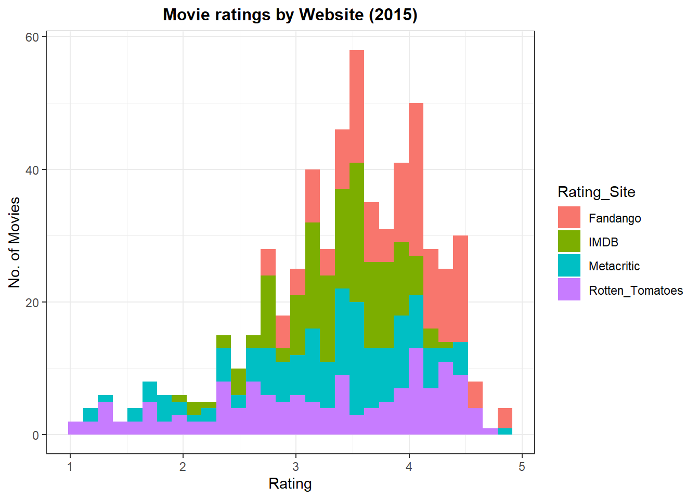
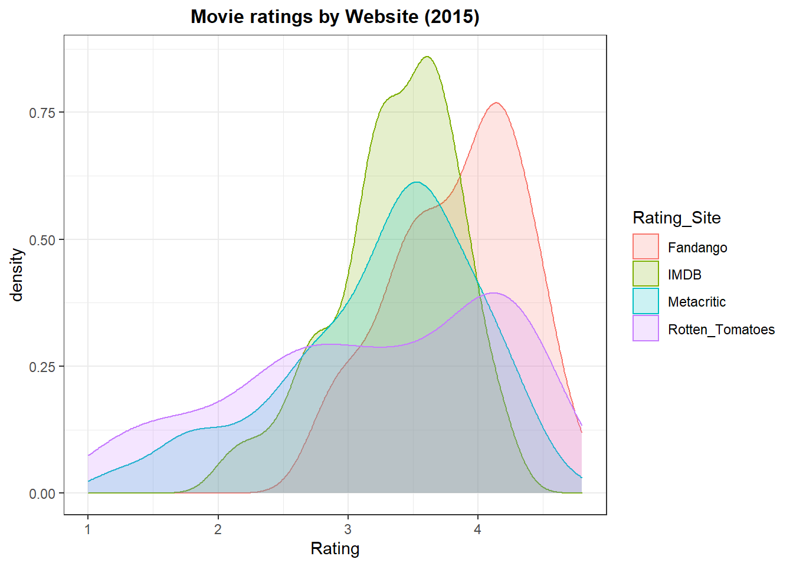

Most of us love watching good movies that align to our tastes and at times, well-rated ones. We can either allow streaming platforms to recommend us movies, see trailers and get interested in upcoming movies or like most of us, go through rating sites like IMDB or Fandango.
The problem is, not all rating sites rate movies the same and we do not know how sites score movies. We would like to rely on sites that are fair, transparent and consistent in how they rate movies. As an analyst, looking at rating data, exploring and visualizing it, helps provide valuable insights.
This project looks into two key areas when it comes to analyzing movie rating data: 1. How do we gain access to movie rating data? Goal: Extract, clean and explore movie rating data. 2. How do we analyze a site’s transparency and consistency in rating movies? Goal: Explore movie ratings and visualize annual ratings.
Most movie rating websites contain a multitude of data from images, to texts to numbers (e.g. scores, year of release etc). I shall use web scarping techniques to extract details of the “Best British TV 2021”. I love British tv shows so i will attempt to extract their titles, year, run-time, genre, number of votes and rating.
This example contains some missing values, just like most data we come across in the world, so it will serve as a good example on how to first scrap the web, the clean the data and eventually manipulate it to deal with missing values.
#Load require packages. Important "rvest" for web scraping.
library(tidyverse)
library(rvest)
library(httr)
library(ggplot2)
library(gridExtra)When web scraping, it is always important to be able to identify the path/CSS selectors of the object e.g. image, you want to capture. Some people prefer to use the “Inspect Webpage” option when you right click on a webpage. Another cool tool, that i prefer to use, is the chrome extension, SelectorGadget.
#Scrap the webpage and clean respective fields.
wp_content_titles<-read_html("C:/Users/ricky/Documents/GitHub/misc-projects/Best British TV 2021 - IMDb.html")%>%
html_nodes(".sub-list h3 a")%>% #This is the selector to show titles
html_text() #this specifies the output, "text", i am seeking
wp_content_year<-read_html("C:/Users/ricky/Documents/GitHub/misc-projects/Best British TV 2021 - IMDb.html")%>%
html_nodes(".sub-list h3 span:nth-child(3)")%>%
html_text()
wp_content_year<-parse_number(wp_content_year) #This changes the date strings to numerical
wp_content_run<-read_html("C:/Users/ricky/Documents/GitHub/misc-projects/Best British TV 2021 - IMDb.html")%>%
html_nodes(".sub-list .runtime")%>%
html_text()
wp_content_run<-parse_number(wp_content_run) #This changes the runtime strings to numerical
wp_content_genre<-read_html("C:/Users/ricky/Documents/GitHub/misc-projects/Best British TV 2021 - IMDb.html")%>%
html_nodes(".sub-list .genre")%>%
html_text()
wp_content_genre<-str_trim(wp_content_genre) #String function to trim the whitespace off
wp_content_rating<-read_html("C:/Users/ricky/Documents/GitHub/misc-projects/Best British TV 2021 - IMDb.html")%>%
html_nodes(".sub-list .small:nth-child(1)")%>%
html_text()
wp_content_rating<-parse_number(wp_content_rating)
wp_content_vote<-read_html("C:/Users/ricky/Documents/GitHub/misc-projects/Best British TV 2021 - IMDb.html")%>%
html_nodes(".sub-list p:nth-child(6) span:nth-child(2)")%>%
html_text()
wp_content_vote<-parse_number(wp_content_vote)Note: As the actual page gets update regularly, i have saved an offline version so as to be able to reproduce the results anytime.
Some of the dataframes have missing values at different positions/indexes. I wrote a function that helps introduce “NA” values in indexes that are missing data. At the end, i want to have dataframes of the same row length.
#Some of the data would Introduce NAs to missing values
append_vector <- function(vector, inserted_indices, values){
## Creating the current indices of the vector
vector_current_indices <- 1:length(vector)
## Adding small amount of values (between 0 and 0.9) to the `inserted_indices`
new_inserted_indices <- inserted_indices + seq(0, 0.9, length.out = length(inserted_indices))
## Appending the `new_inserted_indices` to the current vector indices
indices <- c(vector_current_indices, new_inserted_indices)
## Ordering the indices
ordered_indices <- order(indices)
## Appending the new value to the existing vector
new_vector <- c(vector, values)
## Ordering the new vector wrt the ordered indices
new_vector[ordered_indices]
}
#This function works with indexing the nth-1 position.
#e.g. If a value is missing for the 24th and 44th shows, i specify position 23 and 43
wp_content_genre<-append_vector(wp_content_genre, c(23, 43), NA)
wp_content_run<-append_vector(wp_content_run, c(5,7,9,13,13,13,13,18,18,21,23,
23,23,23,23,23,23,23,23,23,23,
23,23,23,23,23,23,23,23,23,23), NA)
wp_content_rating<-append_vector(wp_content_rating, c(19,21,21,21,
25,25,25,25,25,25,25,25,
25,25,25,25,25,25,25,25,
25,25,25), NA)
wp_content_vote<-append_vector(wp_content_vote, c(19,21,21,21,
25,25,25,25,25,25,25,25,
25,25,25,25,25,25,25,25,
25,25,25), NA)After having tibbles of equal row length, we can create a combined dataframe. This will allow us to analyze the data in any way we prefer.
For example, let us examine how tv show ratings varied with the number or votes with the help of boxplots.
movie_df <- tibble("title" = wp_content_titles,
"year" = wp_content_year,
"runtime" = wp_content_run,
"genre" = wp_content_genre,
"rating" = floor(wp_content_rating),
"vote" = wp_content_vote)
plot1<-ggplot(data = movie_df,
aes(x = rating, y=vote, group=rating)) +
geom_boxplot()+
theme_bw()+
labs(title="IMDB Top 45 British TV shows 2021 Ratings",
y="No. of Votes",
x="Rating")+
theme(plot.title = element_text(size = 12, hjust = 0.5))
plot2<-ggplot(data = movie_df,
aes(x = rating, color="red")) +
geom_density()+
guides(color=FALSE)+
theme_bw()+
labs(title="IMDB Top 45 British TV shows 2021 Ratings (density)",
y="Density",
x="Rating")+
theme(plot.title = element_text(size = 12, hjust = 0.5))
grid.arrange(plot2, plot1, ncol = 2, nrow = 1) We can see that most of the TV shows are rated between 6 and 8, with 7 having the most rating within this IMDB dataframe. You can obviously analyze way more now that you have the data on hand.
Now you might be interested to know if the movie rating site has always been fair, transparent and consistent in its ratings. This is especially true after one of the most prominent rating sites, Fandango, was found in 2015 to bloating its movie ratings to help boost movie ticket sales.
In 2015, Walt Hickey analyzed movie ratings displayed on the fandango website and found them to be considerably exaggerated as compared to actual fun votes that was scripted on the HTML code. You can read his article at the FiveThirtyEight website.
To analyze movie rating consistency we require data from two snapshot periods so as to run a comparison. Thankfully, Walt made his data public on his Github (2015) while another Github user, Mircel, shared data post the analysis (2016-2017).
#Load data from your working directory
#Select fandango variables only
pre_fandago<-pre%>%
select(1,7,8, 21, 22)
post_fandago<-post%>%
select(1,2,7)The data sets contain movies from several years. We are interested in movies in two time periods. Movies released and rated in the year 2015 and those that were released and rated in 2016.
#generate year column from film column
pre_fandago<-pre_fandago%>%
separate(FILM,
into=c("Film", "Year"),
sep="\\(")
pre_fandago$Year<-parse_number(pre_fandago$Year)
#remain with only movies released in 2015 for pre dataset
pre_fandago<-pre_fandago%>%
filter(Year==2015)
#remain with only 2016 movies in post dataset
post_fandago<-post_fandago%>%
filter(year==2016)#Plot 2015
plot3<-pre_fandago%>%
ggplot()+
geom_density(aes(x=Fandango_Stars, fill="red", alpha=0.5))+
geom_density(aes(x=Fandango_Ratingvalue, fill="blue", alpha=0.5))+
guides(alpha=FALSE)+
theme_bw()+
scale_x_continuous(name="Fandango ratings", limits = c(0,5))+
scale_y_continuous(name="Density", limits = c(0.0,1.0))+
scale_fill_discrete(name = "", labels = c("Actual ratings",
"Displayed ratings"))+
labs(title = "Difference in Fandango movie \nratings (2015)")+
theme(plot.title = element_text(hjust=0.5, size = 12, face="bold"),
legend.key.size = unit(1.5, 'lines'))
plot3
#Compare displayed ratings 2015vs 2016
plot4<-ggplot(data = pre_fandago,
aes(x = Fandango_Stars, fill="Red", alpha=0.5)) +
geom_density() +
geom_density(data = post_fandago,
aes(x = fandango, fill= "blue", alpha=0.5)) +
guides(alpha=FALSE)+
theme_bw()+
labs(title = "Comparison of Fandango ratings \n(2015 vs 2016)",
x = "Rating",
y = "Density") +
scale_x_continuous(breaks = seq(0, 5, by = 0.5),
limits = c(0,5))+
scale_fill_discrete(name = "", labels = c("2016 ratings",
"2015 ratings"))+
theme(plot.title = element_text(hjust=0.5, size = 12, face="bold"),
legend.key.size = unit(1.5, 'lines'))
plot4
It is clear that in 2015 Fandango were over-bloating their ratings. Actual ratings were lower than the ratings displayed on their website. After being called out and questioned, they attributed it to a bug and promised to sort it out.
Comparing the displayed ratings for 2016 movies vs 2015 movies, it seems that the 2016 displayed ratings have subsided. This shows there could have been a tweak and current ratings might reflect actual ratings.
pre_fandago %>%
group_by(Fandango_Stars) %>%
summarize(Percentage = n() / nrow(pre_fandago) * 100)## # A tibble: 5 x 2
## Fandango_Stars Percentage
## <dbl> <dbl>
## 1 3 8.53
## 2 3.5 17.8
## 3 4 28.7
## 4 4.5 38.0
## 5 5 6.98post_fandago %>%
group_by(fandango) %>%
summarize(Percentage = n() / nrow(post_fandago) * 100)## # A tibble: 6 x 2
## fandango Percentage
## <dbl> <dbl>
## 1 2.5 3.14
## 2 3 7.33
## 3 3.5 24.1
## 4 4 40.3
## 5 4.5 24.6
## 6 5 0.524The Percentage of movies that displayed 4.5 and 5.0 stars really went down in 2016 as compared to 2015. Further proving the shift lower in ratings.
You can do a similar analysis on any movie rating website of your choice, sourcing data via web scraping.
Maybe the movie rating site you have been using turns out to be inconsistent and dodgy. You might want to check out other movie rating sites, but are they and different to the old site you used?
Comparing several prominent movie rating sites might help you see how they compare alongside each other. Eventually you might like a site with more conservative ratings or maybe a site with higher ratings.
head(movie, 5)## # A tibble: 5 x 3
## FILM Rating_Site Rating
## <chr> <chr> <dbl>
## 1 Avengers: Age of Ultron (2015) Rotten_Tomatoes 4.3
## 2 Cinderella (2015) Rotten_Tomatoes 4
## 3 Ant-Man (2015) Rotten_Tomatoes 4.5
## 4 Do You Believe? (2015) Rotten_Tomatoes 4.2
## 5 Hot Tub Time Machine 2 (2015) Rotten_Tomatoes 1.4#Plot all sites on the same plot to see spread of rating across sites
plot4<-movie%>%
ggplot(aes(x=Rating, fill=Rating_Site))+
geom_histogram(bins=30)+
theme_bw()+
labs(title = "Movie ratings by Website (2015)",
x= "Rating",
y="No. of Movies")+
theme(plot.title = element_text(size = 12, hjust = 0.5, face = "bold"))
plot4
plot5<-movie%>%ggplot(aes(x=Rating, fill=Rating_Site, color=Rating_Site))+
geom_density(alpha=0.2)+
theme_bw()+
labs(title = "Movie ratings by Website (2015)",
x= "Rating",
y="density")+
theme(plot.title = element_text(size = 12, hjust = 0.5, face = "bold"))
plot5
From this snapshot of 2015 movies, it is clear that Rotten Tomatoes has rating that are very spread out while fandango gives out the highest ratings for movies. Movie rating sites that are to the left of Fandango’s density curve, have lower ratings (more reserved).
This project combines data sourcing techniques i.e. web scraping, data cleaning and visualization to bring insights into movie rating websites. Websites are a treasure chest of data and one can pick up and extract interesting data! Maybe next time i shll do one for anime